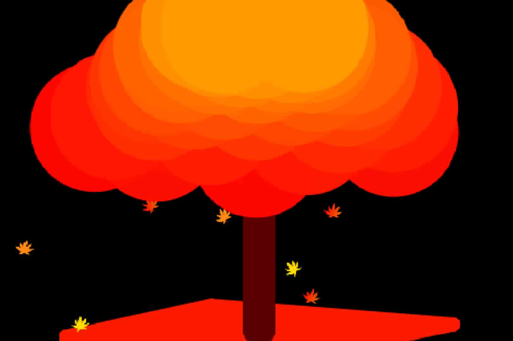

3D紅葉 Japanese maples

リンク
以下のリンクから実際に作品をプレイすることができます。
SCRATCHで見る YouTubeで見る使用方法
紅葉の葉が落ちていく様子を色々な角度から鑑賞（かんしょう）できます。
キーの操作
マウスをクリックすると「自動鑑賞モード」と「手動鑑賞モード」が切り替わります。
3Dの方法
回転する物体の一点を円状に動くとみて三角関数を使い作りました。
横向きの回転は比較的すぐに作れましたが、縦向きの回転を作るのに時間がかかりました。